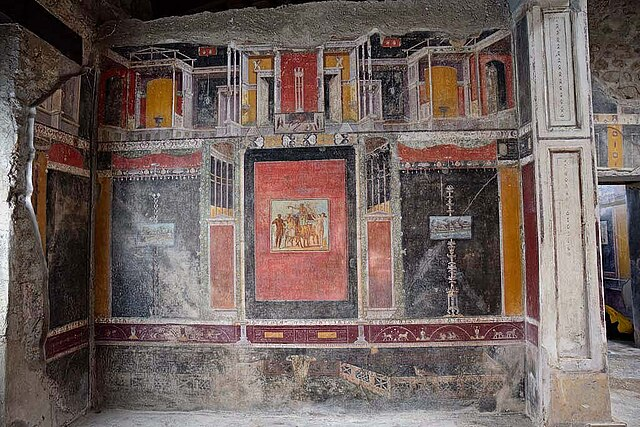

Il n'existe pas beaucoup d'informations au sujet de Marcus Lucretius. On sait qu'il était le propriétaire d'une maison à Pompéi mais guère plus. Son nom complet était Marcus Lucretius Fronto et il s'agissait d'un homme politique local qui avait été candidat aux plus hautes fonctions publiques de la ville comme édile. Si on sait que cette maison était la sienne, c'est grâce à une inscription trouvée dans le jardin vantant son nom et quatre affiches électorales peintes sur les murs extérieurs qui le décrivaient comme un homme courageux et honnête.
A défaut de vous décrire le personnage, je vais me contenter de vous décrire la maison et les suppositions de l'identité de son propriétaire qu'elle permet d'apporter. Tout d'abord, c'est une maison incroyablement bien conservée. La décoration du tablinum (qui est une pièce qu'on associerais aujourd'hui au bureau) montre le degré de richesse et le degré d'érudition de son propriétaire. Les murs de cette pièces sont couverts de fresques et présente un trompe-l'oeil autour duquel s'articule la composition générale des parois peintes de la pièce (voir image ci-dessous).

Sur cette image qui est une photo de la pièce en question, on peut voir les fresques sur les murs qui décorent la pièce. Une ligne pourpre sépare la zone haute de la zone basse. Elle est ornée d'une frise miniature jaune pâle avec des dessins d'animaux et de vaisselle d'argenterie étalant au passage les richesses des possessions du propriétaire. Sur le mur donc, on a un espace central avec un fond très rouge sur lequel sont représentées les noces de Mars et Vénus. Les deux fresques sur les côtés sont quant à elles sur un fond noir. Elles représentent des scènes fictives de paysages et ont un but uniquement décoratif.
Le reste de la décoration du tablinum est dans le même style de représentations tantôt paysagées tantôt mythologiques. Par souci de brièveté je ne présenterais par tout ici mais nous avons pu constater l'étalage que Marcus Lucretius Fronto faisait de ses richesses. On date la construction de cette demeure vers le premier siècle avant J.-C. ou, du moins pour la fin, le commencement de la construction ayant été entreprit aux alentours du deuxième siècle avant J.-C. Les fresques du tablinum sont quant à elles datées autour de 50 et 60 après J.-C. ce qui signifie qu'elles n'étaient pas là à l'origine de la maison mais ont été ajoutés après à la demande de Marcus Lucretius. On peut donc supposer qu'il s'agit de la maison de famille de ce riche politique local ou du moins de l'une de ses acquisitions.